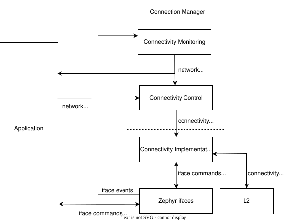

Overview
Connection Manager is a collection of optional Zephyr features that aim to allow applications to monitor and control connectivity (access to IP-capable networks) with minimal concern for the specifics of underlying network technologies.
Using Connection Manager, applications can use a single abstract API to control network association and monitor Internet access, and avoid excessive use of technology-specific boilerplate.
This allows an application to potentially support several very different connectivity technologies (for example, Wi-Fi and LTE) with a single codebase.
Applications can also use Connection Manager to generically manage and use multiple connectivity technologies simultaneously.
Structure
Connection Manager is split into the following two subsystems:
Connectivity monitoring (header file
include/zephyr/net/conn_mgr_monitoring.h) monitors all available Zephyr network interfaces (ifaces) and triggers network management events indicating when IP connectivity is gained or lost.Connectivity control (header file
include/zephyr/net/conn_mgr_connectivity.h) provides an abstract API for controlling iface network association.

A simplified view of how Connection Manager integrates with Zephyr and the application.
See here for a more detailed version.
Connectivity monitoring
Connectivity monitoring tracks all available ifaces (whether or not they support Connectivity control) as they transition through various operational states and acquire or lose assigned IP addresses.
Each available iface is considered ready if it meets the following criteria:
The iface is admin-up
This means the iface has been instructed to become operational-up (ready for use). This is done by a call to
net_if_up().
The iface is oper-up
This means the interface is completely ready for use; It is online, and if applicable, has associated with a network.
See Network interface state management for details.
The iface has at least one assigned IP address
Both IPv4 and IPv6 addresses are acceptable. This condition is met as soon as one or both of these is assigned.
See Network Interface for details on iface IP assignment.
The iface has not been ignored
Ignored ifaces are always treated as unready.
See Ignoring ifaces for more details.
Note
Typically, iface state and IP assignment are updated either by the iface’s L2 implementation or bound connectivity implementation.
See Implement iface state reporting for details.
A ready iface ceases to be ready the moment any of the above conditions is lost.
When at least one iface is ready, the NET_EVENT_L4_CONNECTED network management event is triggered, and IP connectivity is said to be ready.
Afterwards, ifaces can become ready or unready without firing additional events, so long as there always remains at least one ready iface.
When there are no longer any ready ifaces left, the NET_EVENT_L4_DISCONNECTED network management event is triggered, and IP connectivity is said to be unready.
Note
Connection Manager also fires the following more specific CONNECTED / DISCONNECTED events:
These are similar to NET_EVENT_L4_CONNECTED and NET_EVENT_L4_DISCONNECTED, but specifically track whether IPv4- and IPv6-capable ifaces are ready.
Usage
Connectivity monitoring is enabled if the CONFIG_NET_CONNECTION_MANAGER Kconfig option is enabled.
To receive connectivity updates, create and register a listener for the NET_EVENT_L4_CONNECTED and NET_EVENT_L4_DISCONNECTED network management events:
/* Callback struct where the callback will be stored */
struct net_mgmt_event_callback l4_callback;
/* Callback handler */
static void l4_event_handler(struct net_mgmt_event_callback *cb,
uint32_t event, struct net_if *iface)
{
if (event == NET_EVENT_L4_CONNECTED) {
LOG_INF("Network connectivity gained!");
} else if (event == NET_EVENT_L4_DISCONNECTED) {
LOG_INF("Network connectivity lost!");
}
/* Otherwise, it's some other event type we didn't register for. */
}
/* Call this before Connection Manager monitoring initializes */
static void my_application_setup(void)
{
/* Configure the callback struct to respond to (at least) the L4_CONNECTED
* and L4_DISCONNECTED events.
*
*
* Note that the callback may also be triggered for events other than those specified here!
* (See the net_mgmt documentation)
*/
net_mgmt_init_event_callback(
&l4_callback, l4_event_handler,
NET_EVENT_L4_CONNECTED | NET_EVENT_L4_DISCONNECTED
);
/* Register the callback */
net_mgmt_add_event_callback(&l4_callback);
}
See Listening to network events for more details on listening for net_mgmt events.
Note
To avoid missing initial connectivity events, you should register your listener(s) before Connection Manager monitoring initializes. See Avoiding missed notifications for strategies to ensure this.
Avoiding missed notifications
Connectivity monitoring may trigger events immediately upon initialization.
If your application registers its event listeners after connectivity monitoring initializes, it is possible to miss this first wave of events, and not be informed the first time network connectivity is gained.
If this is a concern, your application should register its event listeners before connectivity monitoring initializes.
Connectivity monitoring initializes using the SYS_INIT APPLICATION initialization priority specified by the CONFIG_NET_CONNECTION_MANAGER_MONITOR_PRIORITY Kconfig option.
You can register your callbacks before this initialization by using SYS_INIT with an earlier initialization priority than this value, for instance priority 0:
static int my_application_setup(void)
{
/* Register callbacks here */
return 0;
}
SYS_INIT(my_application_setup, APPLICATION, 0);
If this is not feasible, you can instead request that connectivity monitoring resend the latest connectivity events at any time by calling conn_mgr_mon_resend_status():
static void my_late_application_setup(void)
{
/* Register callbacks here */
/* Once done, request that events be re-triggered */
conn_mgr_mon_resend_status();
}
Ignoring ifaces
Applications can request that ifaces be ignored by Connection Manager by calling conn_mgr_ignore_iface() with the iface to be ignored.
Alternatively, an entire L2 implementation can be ignored by calling conn_mgr_ignore_l2().
This has the effect of individually ignoring all the ifaces using that L2 implementation.
While ignored, the iface is treated by Connection Manager as though it were unready for network traffic, no matter its actual state.
This may be useful, for instance, if your application has configured one or more ifaces that cannot (or for whatever reason should not) be used to contact the wider Internet.
Bulk convenience functions optionally skip ignored ifaces.
See conn_mgr_ignore_iface() and conn_mgr_watch_iface() for more details.
Connectivity monitoring API
Include header file include/zephyr/net/conn_mgr_monitoring.h to access these.
Connectivity control
Many network interfaces require a network association procedure to be completed before being usable.
For such ifaces, connectivity control can provide a generic API to request network association (conn_mgr_if_connect()) and disassociation (conn_mgr_if_disconnect()).
Network interfaces implement support for this API by binding themselves to a connectivity implementation.
Using this API, applications can associate with networks with minimal technology-specific boilerplate.
Connectivity control also provides the following additional features:
Standardized persistence and timeout behaviors during association.
Bulk functions for controlling the admin state and network association of all available ifaces simultaneously.
Optional convenience automations for common connectivity actions.
Basic operation
The following sections outline the basic operation of Connection Manager’s connectivity control.
Binding
Before an iface can be commanded to associate or disassociate using Connection Manager, it must first be bound to a connectivity implementation. Binding is performed by the provider of the iface, not by the application (see Binding an iface to an implementation), and can be thought of as an extension of the iface declaration.
Once an iface is bound, all connectivity commands passed to it (such as conn_mgr_if_connect() or conn_mgr_if_disconnect()) will be routed to the corresponding implementation function in the connectivity implementation.
Note
To avoid inconsistent behavior, all connectivity implementations must adhere to the implementation guidelines.
Connecting
Once a bound iface is admin-up (see Network interface state management), conn_mgr_if_connect() can be called to cause it to associate with a network.
If association succeeds, the connectivity implementation will mark the iface as operational-up (see Network interface state management).
If association fails unrecoverably, the fatal error event will be triggered.
You can configure an optional timeout for this process.
Note
The conn_mgr_if_connect() function is intentionally minimalistic, and does not take any kind of configuration.
Each connectivity implementation should provide a way to pre-configure or automatically configure any required association settings or credentials.
See Allow connectivity pre-configuration for details.
Connection loss
If connectivity is lost due to external factors, the connectivity implementation will mark the iface as operational-down.
Depending on whether persistence is set, the iface may then attempt to reconnect.
Manual disconnection
The application can also request that connectivity be intentionally abandoned by calling conn_mgr_if_disconnect().
In this case, the connectivity implementation will disassociate the iface from its network and mark the iface as operational-down (see Network interface state management). A new connection attempt will not be initiated, regardless of whether persistence is enabled.
Timeouts and Persistence
Connection Manager requires that all connectivity implementations support the following standard key features:
These features describe how ifaces should behave during connect and disconnect events. You can individually set them for each iface.
Note
It is left to connectivity implementations to successfully and accurately implement these two features as described below. See Implementing timeouts and persistence for more details from the connectivity implementation perspective.
The Connection Manager also implements the following optional feature:
Note
The only requirement on the connectivity implementation to implement idle timeouts is to call conn_mgr_if_used() each
time the interface is used.
Connection Timeouts
When conn_mgr_if_connect() is called on an iface, a connection attempt begins.
The connection attempt continues indefinitely until it succeeds, unless a timeout has been specified for the iface (using conn_mgr_if_set_timeout()).
In that case, the connection attempt will be abandoned if the timeout elapses before it succeeds. If this happens, the timeout event is raised.
Interface Idle Timeout
The connection manager enables users to apply an inactivity timeout on an interface (conn_mgr_if_set_idle_timeout()).
Once connected, if the interface goes for the configured number of seconds without any activity, the interface is automatically disconnected.
If this happens, the idle timeout event is raised.
An idle timeout is considered an unintentional connection loss for the purposes of Connection persistence.
Connection Persistence
Each iface also has a connection persistence setting that you can enable or disable by setting the CONN_MGR_IF_PERSISTENT flag with conn_mgr_binding_set_flag().
This setting specifies how the iface should handle unintentional connection loss.
If persistence is enabled, any unintentional connection loss will initiate a new connection attempt, with a new timeout if applicable.
Otherwise, the iface will not attempt to reconnect.
Note
Persistence not does affect connection attempt behavior. Only the timeout setting affects this.
For instance, if a connection attempt on an iface times out, the iface will not attempt to reconnect, even if it is persistent.
Conversely, if there is not a specified timeout, the iface will try to connect forever until it succeeds, even if it is not persistent.
See Persistence during connection attempts for the equivalent implementation guideline.
Control events
Connectivity control triggers network management events to inform the application of important state changes.
See Trigger connectivity control events for the corresponding connectivity implementation guideline.
Fatal Error
The NET_EVENT_CONN_IF_FATAL_ERROR event is raised when an iface encounters an error from which it cannot recover (meaning any subsequent attempts to associate are guaranteed to fail, and all such attempts should be abandoned).
Handlers of this event will be passed a pointer to the iface for which the fatal error occurred. Individual connectivity implementations may also pass an application-specific data pointer.
Timeout
The NET_EVENT_CONN_IF_TIMEOUT event is raised when an iface association attempt times out.
Handlers of this event will be passed a pointer to the iface that timed out attempting to associate.
Idle Timeout
The NET_EVENT_CONN_IF_IDLE_TIMEOUT event is raised when an interface is considered inactive.
Handlers of this event will be passed a pointer to the iface that timed out attempting to associate.
Listening for control events
You can listen for control events as follows:
/* Declare a net_mgmt callback struct to store the callback */
struct net_mgmt_event_callback my_conn_evt_callback;
/* Declare a handler to receive control events */
static void my_conn_evt_handler(struct net_mgmt_event_callback *cb,
uint32_t event, struct net_if *iface)
{
if (event == NET_EVENT_CONN_IF_TIMEOUT) {
/* Timeout occurred, handle it */
} else if (event == NET_EVENT_CONN_IF_FATAL_ERROR) {
/* Fatal error occurred, handle it */
}
/* Otherwise, it's some other event type we didn't register for. */
}
int main()
{
/* Configure the callback struct to respond to (at least) the CONN_IF_TIMEOUT
* and CONN_IF_FATAL_ERROR events.
*
* Note that the callback may also be triggered for events other than those specified here!
* (See the net_mgmt documentation)
*/
net_mgmt_init_event_callback(
&conn_mgr_conn_callback, conn_mgr_conn_handler,
NET_EVENT_CONN_IF_TIMEOUT | NET_EVENT_CONN_IF_FATAL_ERROR
);
/* Register the callback */
net_mgmt_add_event_callback(&conn_mgr_conn_callback);
return 0;
}
See Listening to network events for more details on listening for net_mgmt events.
Automated behaviors
There are a few actions related to connectivity that are (by default at least) performed automatically for the user.
Connectivity control API
Include header file include/zephyr/net/conn_mgr_connectivity.h to access these.
Bulk API
Connectivity control provides several bulk functions allowing all ifaces to be controlled at once.
You can restrict these functions to operate only on non-ignored ifaces if desired.
Include header file include/zephyr/net/conn_mgr_connectivity.h to access these.